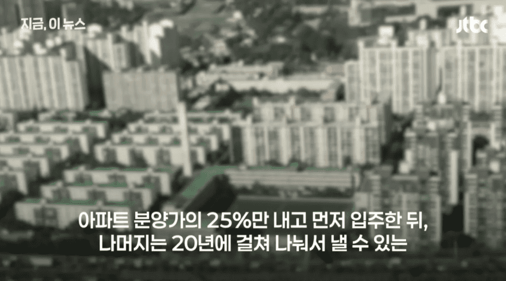
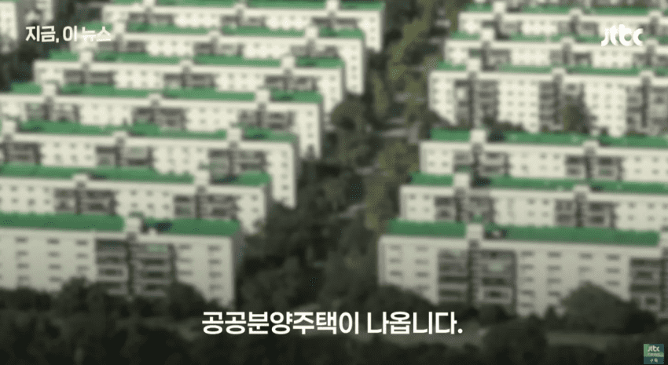
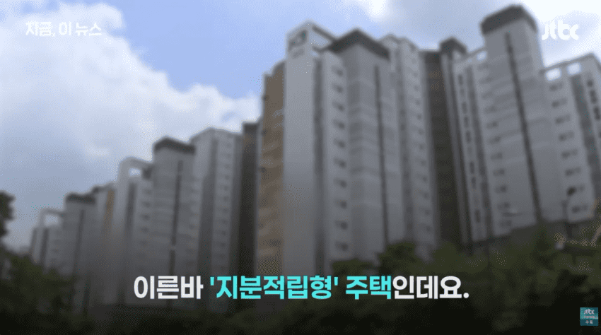
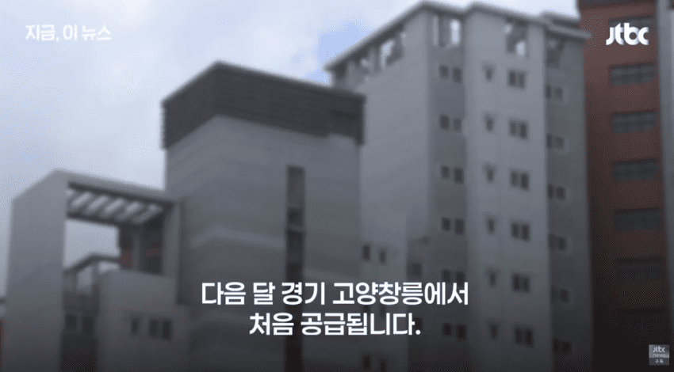
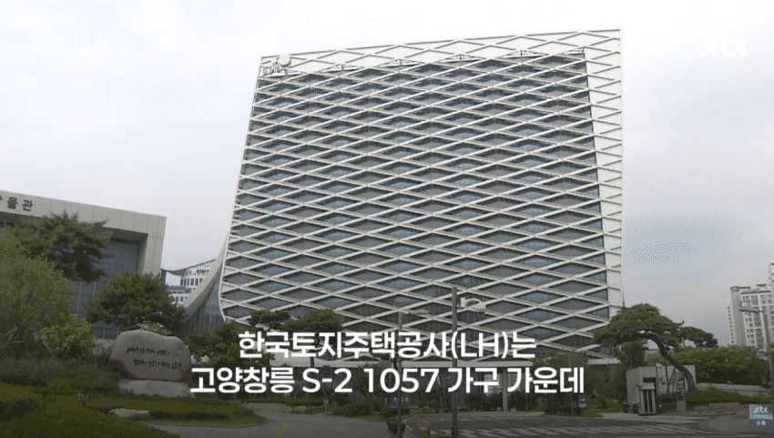
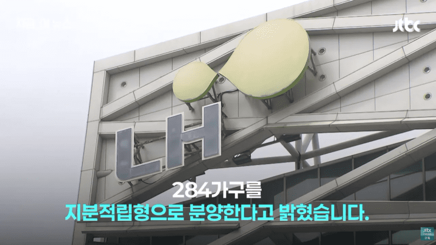
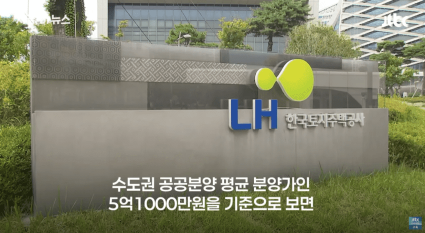
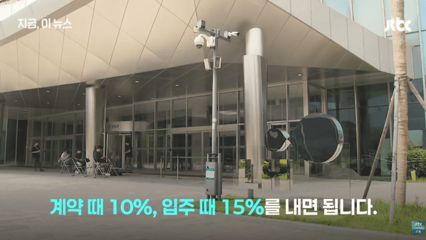
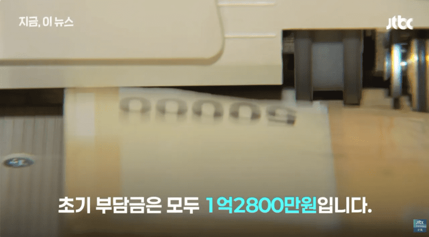
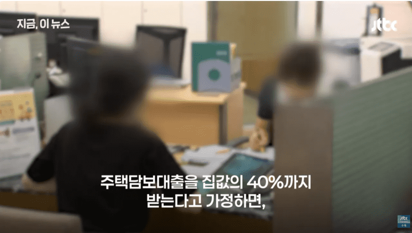
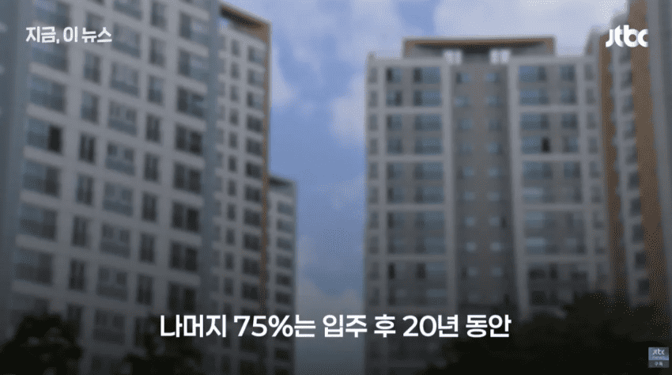
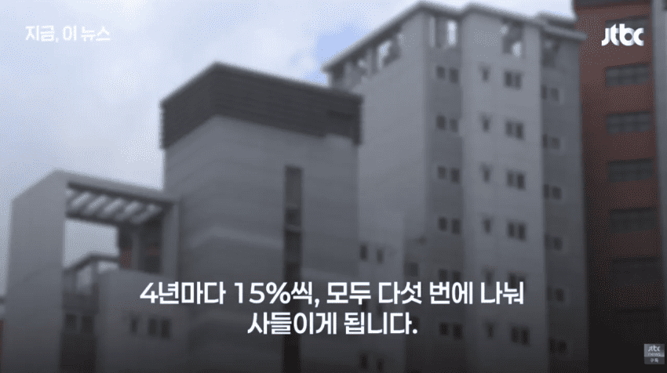
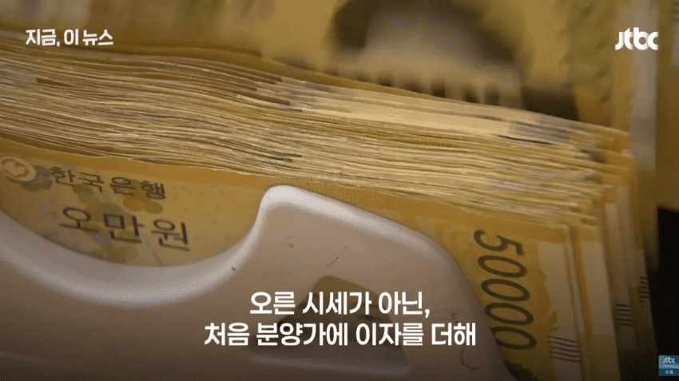
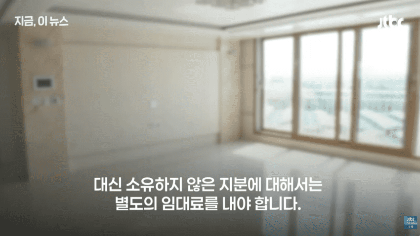
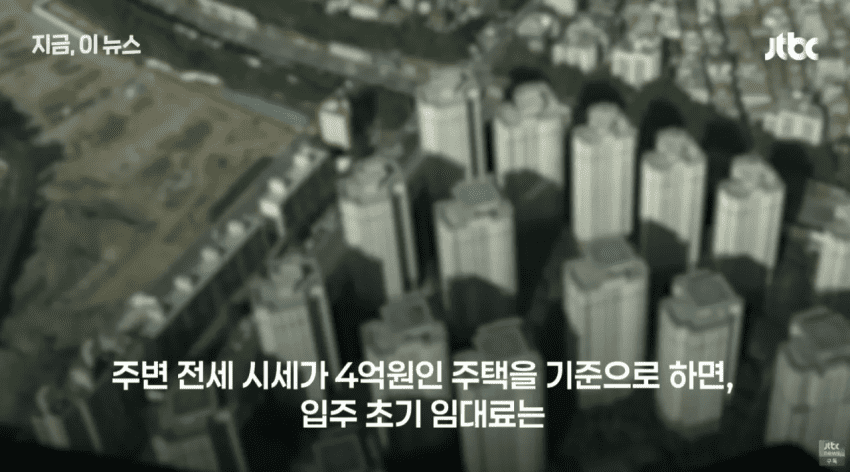
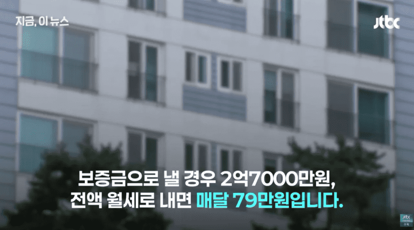
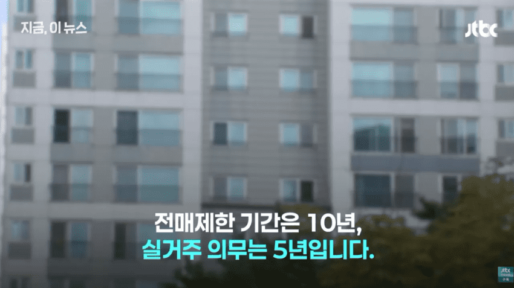
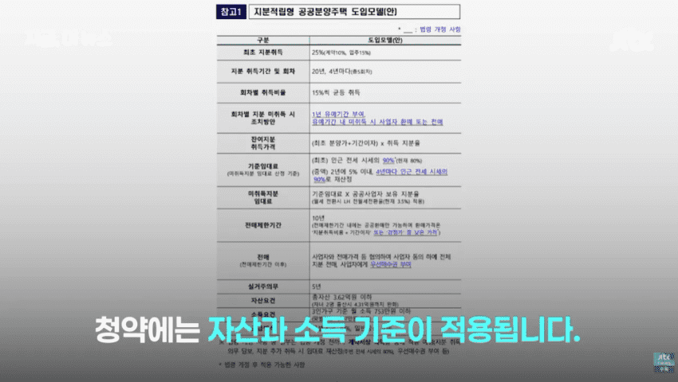
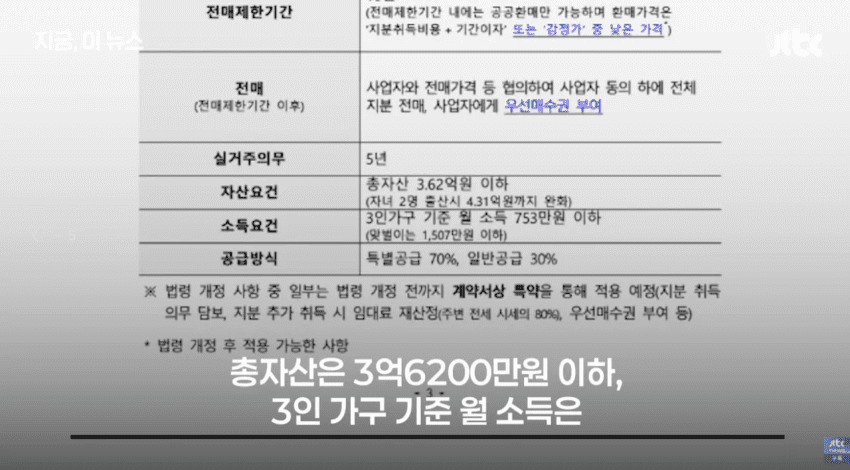
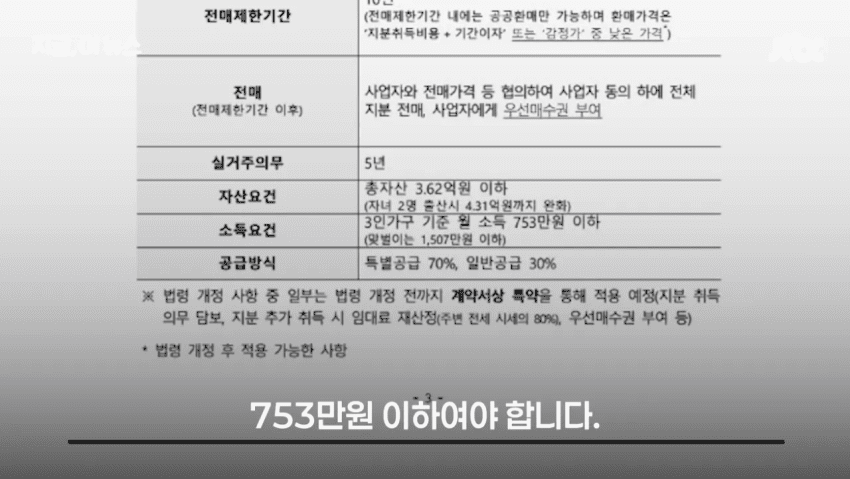
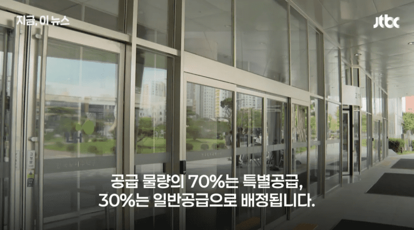
이게 왜 엄청난 정책이냐하실텐데
왜 쩌는지 부동산 매매하면서 겪은고통에 대해 써보겠음
1. 대출 안나올 것에 대한 불안감..
대출은 계약서 들고가서 신청해야 알 수 있음 그냥 가서 상담하면 나올거 같은데요? 이게 끝임
즉 7억짜리더라도 2억 대출이 나올지 안나올지 확답 안줌.. 그런데 저건 초기비용 자체가 확 낮아짐
2. 20년 할부에 4년마다 15%
어짜피 은행에 30년 할부로 대출 다 땡겨서 이자내나, 저기다 이자내나 난 동일하다 봄
특히 은행 지금 5%까지 주담대 이자 올라간다 난리인데...
3. 초기비용 엄청 적음
1.28억이면 매수가 가능한데 심지어 계약당시 매매가 갚는다? 집값은 물가상승률 비례해서 무조건 올라감
연 4~6%는 올라간다 생각하면 됨
그래야 실제론 본전임.. 짜장면값이 과거 2천원에서 8천원 넘는 지금을 보는것과 같음
요즘 신축 분양가가 과거엔 8억 이었으면 지금은 14억임
인건비 자재비 물류비 기타등등 다 올라가니까
그래서 소득수준을 보고 추첨한단 것이고
이자까지 적으면 엄청난 메리트인것
댓글
수집 당시 댓글 179개
· ㅇㅇ · 11.07 23:21:16
ㅇㅇ · 11.07 23:21:13
ㅇㅇ · 11.07 23:21:38
ㅇㅇ · 11.07 23:21:45
· ㅇㅇ · 11.07 23:25:38
· ㅇㅇ · 11.07 23:41:14
· ㅇㅇ · 11.08 15:24:39
ㅇㅇ · 11.07 23:22:49
ㅇㅇ · 11.07 23:23:08
· ㅇㅇ · 11.07 23:38:23
ㅇㅇ · 11.07 23:24:32
ㅎㅎ · 11.07 23:25:13
ㅇㅇ · 11.07 23:25:27
· ㅇㅇ · 11.07 23:38:03
ㅇㅇ · 11.07 23:26:49
ㅇㅇ · 11.07 23:29:27
ㅇㅇ · 11.07 23:29:44
· ㅇㅇ · 11.07 23:37:23
ㅇㅇ · 11.07 23:33:25
ㅇㅇ · 11.07 23:33:45
ㅇㅇ · 11.07 23:34:26
ㅇㅇㅇ · 11.07 23:36:34
· ㅇㅇ · 11.08 00:20:42
ㅇㅇ · 11.07 23:37:12
ㅇㅇ · 11.07 23:38:18
· ㅇㅇ · 11.07 23:52:24
ㅇㅇ · 11.07 23:40:01
ㅇㅇ · 11.07 23:40:06
ㅇㅇ · 11.07 23:41:37
ㅇㅇ · 11.07 23:41:56
Inflation · 11.07 23:43:05
ㅇㅇ · 11.07 23:43:11
나갤루 · 11.07 23:43:17
ㅇㅇ · 11.07 23:46:00
스턉 · 11.07 23:49:53
· ㅇㅇ · 11.07 23:51:10
ㅇㅇ · 11.07 23:50:16
ㅇㅇ · 11.07 23:50:20
ㅇㅇ · 11.07 23:51:28
ㅇㅇ · 11.07 23:53:25
ㅇㅇ · 11.07 23:54:04
· ㅇㅇ · 11.07 23:54:12
ㅇㅇ · 11.07 23:54:47
ㅇㅇ · 11.07 23:55:15
ㅇㅇ · 11.07 23:57:20
ㅇㅇ · 11.08 00:04:29
그냥대출을
풀어주면
될것을
ㅇㅇ · 11.08 00:09:45
환란 전 교회 휴거 · 11.08 00:18:10
ㄴㅁㅇㅁㄴㅇ · 11.08 00:36:56
ㅇㅇ · 11.08 00:37:26
ㅇㅇ · 11.08 00:42:33
ㅇㅇ · 11.08 00:47:31
ㅇㅇ · 11.08 00:52:51
ㅇㅇ · 11.08 00:53:16
ㅇㅇ · 11.08 00:59:41
ㅇㅇ · 11.08 01:02:59
ㅇㅇ · 11.08 01:15:06
ㅇㅇ · 11.08 01:15:35
1 · 11.08 01:24:05
ㅇㅇ · 11.08 01:47:01
ㅇㅇ · 11.08 01:55:04
ㅇㅇ · 11.08 02:21:17
ㅇㅇ · 11.08 02:22:02
주소킹 · 11.08 02:56:19
쿠갤러2 · 11.08 04:02:01
ㅇㅇㅇ · 11.08 05:33:07
ㅇㅇ · 11.08 06:17:59
ㅇㅇ · 11.08 06:18:03
ㅇㅇ · 11.08 06:54:38
ㅇㅇ · 11.08 07:53:33
ㅇㅇ · 11.08 08:41:15
ㅇㅇ · 11.08 08:51:07
DnD · 11.08 08:54:50
ㅇㅇ · 11.08 09:26:34
ㅇㅇ · 11.08 09:29:12
ㅇㅇ · 11.08 10:13:26
ㅇㅇ · 11.08 10:30:52
팩트만말해요 · 11.08 10:31:52
ㅇㅇ · 11.08 10:39:57
ㅁㄴㅇㄹ · 11.08 10:56:44
20028 · 11.08 11:01:48
· 20028 · 11.08 11:02:32
ㅇㅇ · 11.08 11:02:57
찢 · 11.08 11:38:21
· 찢 · 11.08 11:40:32
ㅇㅇ · 11.08 12:22:17
o o · 11.08 12:38:59
도태남 · 11.08 13:08:13
ㅇㅇ · 11.08 13:08:16
ㅇㅇ · 11.08 13:17:12
풀러리 · 11.08 13:57:12
JungNu · 11.08 14:04:18
ㅇㅇ · 11.08 14:09:46
ㅇㅇ · 11.08 15:16:15
ㅇㅇ · 11.08 15:43:55
ㅇㅇ · 11.08 15:46:48
ㅇㅇ · 11.08 15:54:45
ㅇㅇ · 11.08 17:46:59
ㅇㅇ · 11.08 17:55:06
ㅇㅇ · 11.08 18:24:13
함께혁신함께성공새로운전북 · 11.07 11:35:15
· ㅇㅇ · 11.07 23:10:02
땨뗘(봇) · 11.07 23:05:05
ㅇㅇ · 11.07 23:06:04
ㅇㅇ · 11.07 23:07:13
· ㅇㅇ · 11.07 23:33:31
ㅇㅇ · 11.07 23:07:16
· ㅇㅇ · 11.07 23:07:48
· ㅇㅇ · 11.07 23:10:40
· ㅇㅇ · 11.07 23:10:58
ㅇㅇ · 11.07 23:07:23
ㅇㅇ · 11.07 23:07:57
ㅇㅇ · 11.07 23:08:05
ㅇㅇ · 11.07 23:08:28
· ㅇㅇ · 11.07 23:34:48
ㅇㅇ · 11.07 23:08:48
· ㅇㅇ · 11.07 23:09:32
· ㅇㅇ · 11.07 23:10:25
· ㅇㅇ · 11.07 23:12:07
· ㅇㅇ · 11.07 23:13:21
ㅇㅇ · 11.07 23:09:05
ㅇㅇ · 11.07 23:10:06
ㅇㅇ · 11.07 23:10:07
호시노히나타 · 11.07 23:10:35
ㅇㅇ · 11.07 23:10:56
ㅇㅇ · 11.07 23:11:10
· ㅇㅇ · 11.07 23:12:03
· ㅇㅇ · 11.07 23:12:39
· ㅇㅇ · 11.07 23:13:01
· ㅇㅇ · 11.07 23:14:38
· ㅇㅇ · 11.07 23:16:46
· ㅇㅇ · 11.07 23:17:53
· ㅇㅇ · 11.07 23:57:48
ㅇㅇ · 11.07 23:11:25
· 헤리야 · 11.08 12:10:19
· ㅇㅇ · 11.08 13:52:53
Cast_Away · 11.07 23:12:28
· Cast_Away · 11.07 23:12:47
· ㅇㅇ · 11.07 23:12:58
· ㅇㅇ · 11.07 23:35:07
ㅇㅇ · 11.07 23:13:08
· ㅇㅇ · 11.07 23:14:35
· 소설쟁이 · 11.07 23:15:24
ㅇㅇ · 11.07 23:13:35
· ㅇㅇ · 11.07 23:14:23
ㅇㅇ · 11.07 23:13:41
섬마을대머리 · 11.07 23:13:51
· ㅇㅇ · 11.07 23:35:36
ㅇㅇ · 11.07 23:14:00
ㅇㅇ · 11.07 23:14:19
ㅇㅇ · 11.07 23:14:26
· ㅇㅇ · 11.07 23:16:09
섬마을대머리 · 11.07 23:14:44
ㅇㅇ · 11.07 23:15:31
ㅇㅇ · 11.07 23:15:50
ㅇㅇ · 11.07 23:16:03
초등학생이다 · 11.07 23:16:07
· ㅇㅇ · 11.07 23:19:11
· ㅇㅇ · 11.07 23:56:19
· ㅇㅇ · 11.08 09:36:24
ㅇㅇ · 11.07 23:16:54
· ㅇㅇ · 11.07 23:55:47
· ㅇㅇ · 11.08 00:05:16
· ㅇㅇ · 11.08 11:28:55
ㅇㅇ · 11.07 23:17:00
ㅇㅇ · 11.07 23:18:10
· ㅇㅇ · 11.07 23:18:24
· ㅇㅇ · 11.07 23:41:45
ㅇㅇ · 11.07 23:19:24
· ㅇㅇ · 11.07 23:55:05
ㅇㅇ · 11.07 23:20:03
· ㅇㅇ · 11.07 23:20:09
· ㅇㅇ · 11.07 23:20:49
· ㅇㅇ · 11.07 23:21:42
· ㅇㅇ · 11.07 23:22:51
· ㅇㅇ · 11.07 23:24:11
· ㅇㅇ · 11.07 23:24:22
당일수개표 두려워서 벌벌떠는
· ㅇㅇ · 11.07 23:40:48
ㅇㅇ · 11.07 23:20:21